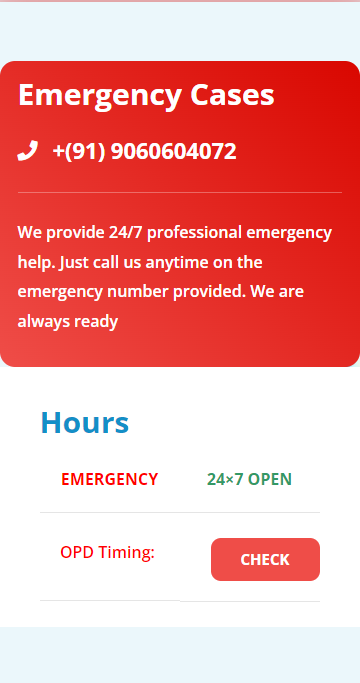

Welcome

Apna Care Hospital is a multi-speciality hospital with high-end diagnostic and treatment facilities. Located at Panki Road Redma, Daltonganj, Jharkhand. The Hospital is designed to have a continuum of safe and high-quality care for health and well-being. Aashi Care Hospital brings cutting-edge technology to compliment the skills of doctors and para medical staff.
BEST HOSPITAL NEAR ME
The days of migrating for specialised medical services is a thing of past! Experience world class medical services right here in Daltonganj, Jharkhand.
EXPEREINCED DOCTOR
Experience the best that developments in technology has to offer along with unmatched expertise of our experienced doctors
About Our Hospital

Apna Care Hospital is a multi-speciality hospital with high-end diagnostic and treatment facilities. Located at Panki Road Redma, Daltonganj, Jharkhand. The Hospital is designed to have a continuum of safe and high-quality care for health and well-being. Aashi Care Hospital brings cutting-edge technology to complement the skills of doctors and para-medical staff.
Aashi Care Multi Speciality Hospital provides 24/7 emergency service, with specialized Major OT, Minor OT, ICU, Ultrasound, General wards, Deluxe, and Super Deluxe fully air-conditioned private cabin wards, Dialysis Unit, Pharmacy, High-End Laboratory, USG, and Digital X-ray, etc. Round the clock Doctors 24 hours Ambulance and all types of Insurance and Govt Medical Schemes, In-House Canteen, and parking facility available.
This Multi Speciality Hospital is designed to have continued high-quality care for health and wellbeing. And brings cutting-edge technology to complement the skill of consultants and surgeons to perform minimally invasive procedures. Technology machinery to give the best and fast service to the patient. In this view, we have well-qualified and experienced Consultants, Residing Doctors, Staff Nurse, Medical staff, Para Medical Staff, and services provider staff.